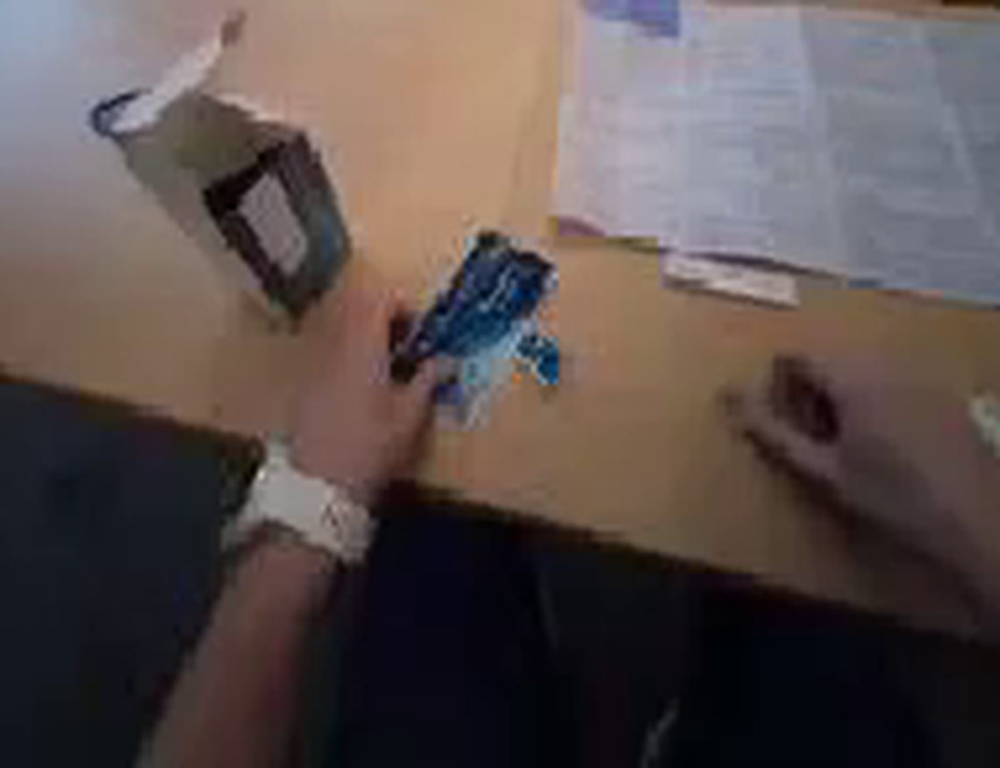
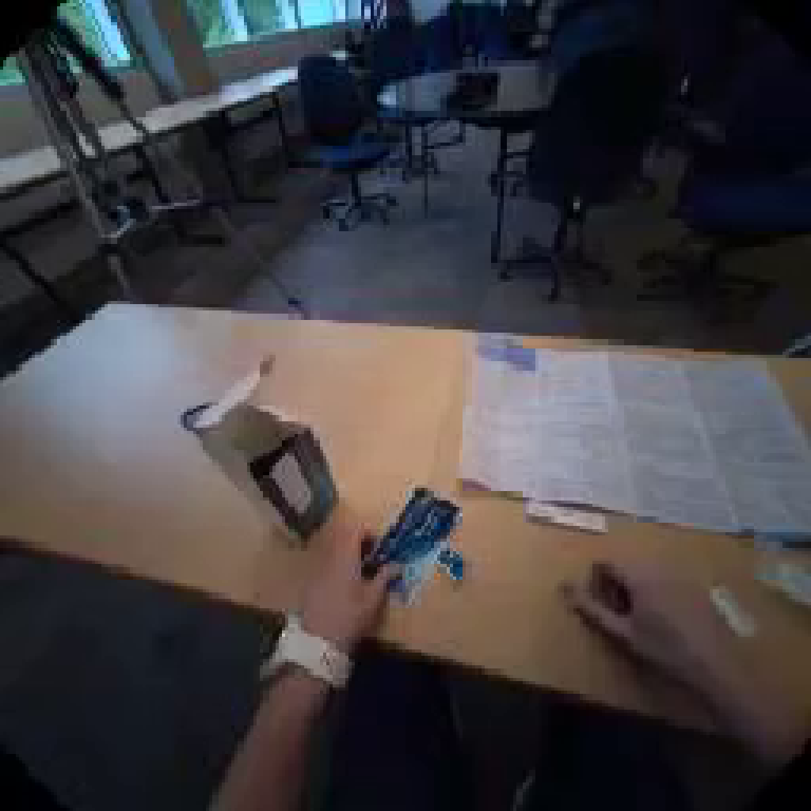
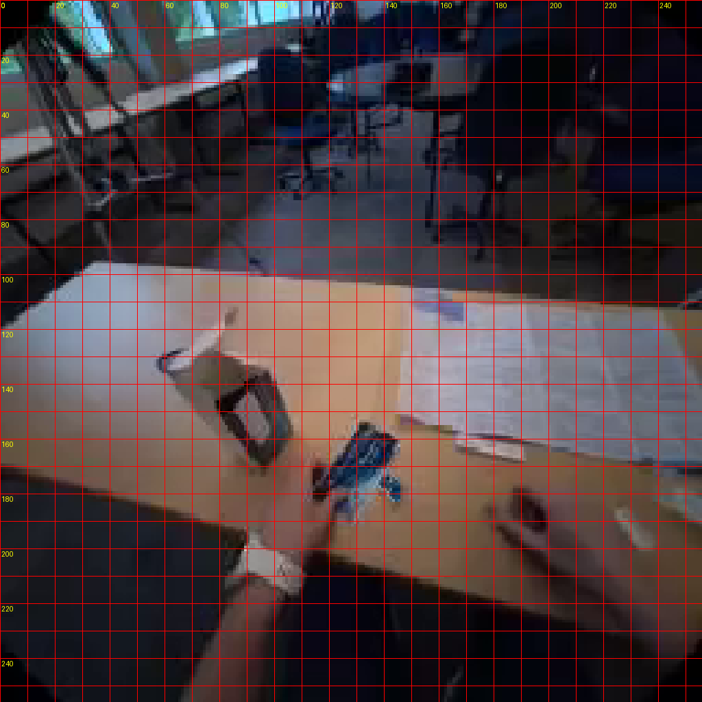
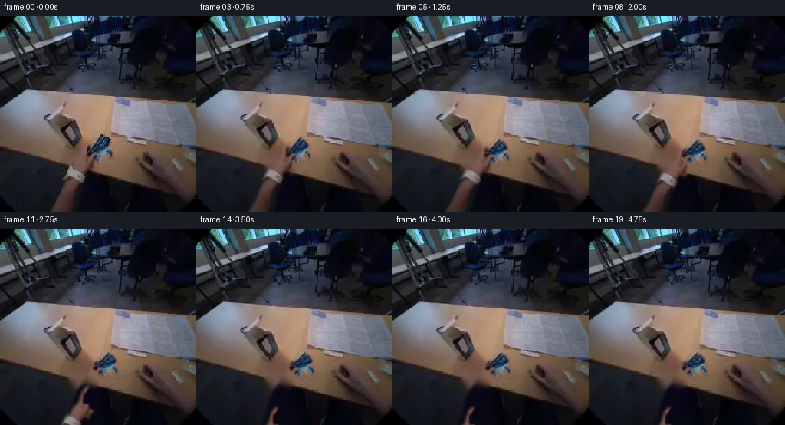
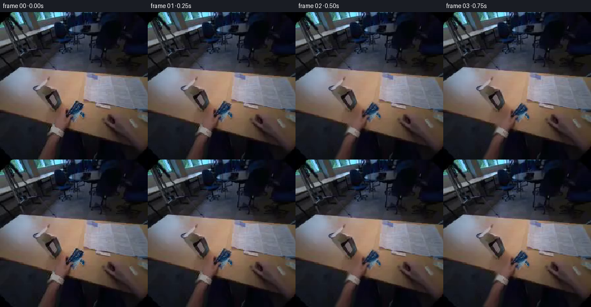
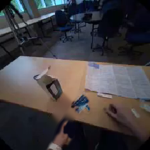
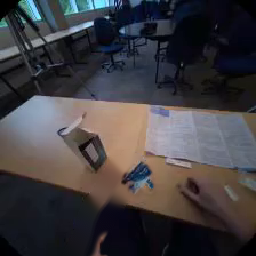

CODING AGENTS AS PIXEL WORLD MODELS
traex/GPT-5.6-Sol · common50_0022
点击播放 · 原生 RGB 像素
逐轮保存的候选
回放视频、检查图与代码变化。
每份候选均可单独播放。实际图片检查记录在下方工具轨迹中。
候选 01播放与检查图
点击播放 · 原生 RGB 像素

展开代码变化
--- 上一保存版本
+++ 本次保存版本
@@ -0,0 +1,190 @@
+"""Generate a short egocentric clip of the held sachet being put down.
+
+The animation deliberately works from the supplied photograph only. The hand
+and foil packet are separated into soft photographic layers, the newly exposed
+table is filled from its immediate surroundings, and the layers are moved with
+small affine transforms. This keeps the low-resolution, motion-blurred look of
+the input instead of introducing sharp synthetic graphics.
+"""
+
+from pathlib import Path
+
+import cv2
+import numpy as np
+from PIL import Image
+
+import artifact_io
+
+
+HERE = Path(__file__).resolve().parent
+
+
+def smoothstep(x):
+ x = np.clip(x, 0.0, 1.0)
+ return x * x * (3.0 - 2.0 * x)
+
+
+def soft_polygon(shape, points, feather=2.2):
+ """Return a gently feathered polygon mask."""
+ hard = np.zeros(shape, np.uint8)
+ cv2.fillPoly(hard, [np.asarray(points, np.int32)], 255)
+ if feather:
+ k = max(3, int(round(feather * 4)) | 1)
+ hard = cv2.GaussianBlur(hard, (k, k), feather)
+ return hard.astype(np.float32) / 255.0
+
+
+def affine_about(cx, cy, dx=0.0, dy=0.0, angle=0.0, sx=1.0, sy=1.0):
+ """OpenCV affine matrix with independent scale around a pivot."""
+ a = np.deg2rad(angle)
+ ca, sa = np.cos(a), np.sin(a)
+ linear = np.array([[ca * sx, -sa * sy],
+ [sa * sx, ca * sy]], np.float32)
+ pivot = np.array([cx, cy], np.float32)
+ trans = pivot + np.array([dx, dy], np.float32) - linear @ pivot
+ return np.column_stack([linear, trans]).astype(np.float32)
+
+
+def warp_rgba(image, alpha, matrix):
+ """Warp premultiplied colour and alpha, avoiding dark fringe pixels."""
+ h, w = alpha.shape
+ premul = image.astype(np.float32) * alpha[..., None]
+ wp = cv2.warpAffine(premul, matrix, (w, h), flags=cv2.INTER_LINEAR,
+ borderMode=cv2.BORDER_CONSTANT, borderValue=0)
+ wa = cv2.warpAffine(alpha, matrix, (w, h), flags=cv2.INTER_LINEAR,
+ borderMode=cv2.BORDER_CONSTANT, borderValue=0)
+ colour = wp / np.maximum(wa[..., None], 1e-4)
+ return colour, np.clip(wa, 0.0, 1.0)
+
+
+def composite(dst, colour, alpha):
+ return dst * (1.0 - alpha[..., None]) + colour * alpha[..., None]
+
+
+def make_clean_plate(src, removal):
+ """Fill the small area exposed when the arm moves away.
+
+ Telea filling works well for the smooth wooden top. Below the slanted desk
+ edge, nearest-neighbour filling retains the dark clothing/floor instead of
+ extending the wood down into the viewer's lap.
+ """
+ mask = (removal > 0.025).astype(np.uint8) * 255
+ mask = cv2.dilate(mask, np.ones((5, 5), np.uint8), iterations=1)
+ plate = cv2.inpaint(src, mask, 5, cv2.INPAINT_TELEA)
+
+ # The broad, featureless table benefits from a little local smoothing only
+ # inside the repaired area. This also suppresses inpaint streaks.
+ smooth = cv2.GaussianBlur(plate, (0, 0), 2.0)
+ table_zone = np.zeros(mask.shape, np.uint8)
+ # The near table edge slopes down from y=184 on the left to y=221 right.
+ cv2.fillPoly(table_zone, [np.array([(0, 112), (256, 112),
+ (256, 224), (0, 183)], np.int32)], 255)
+ blend = (mask.astype(np.float32) / 255.0) * (table_zone / 255.0) * 0.34
+ plate = plate.astype(np.float32) * (1 - blend[..., None]) + \
+ smooth.astype(np.float32) * blend[..., None]
+ return np.clip(plate, 0, 255).astype(np.uint8)
+
+
+def add_contact_shadow(frame, alpha, amount):
+ """Put a soft, close shadow just down-table from the packet."""
+ h, w = alpha.shape
+ shifted = cv2.warpAffine(alpha, np.array([[1, 0, 1.5], [0, 1, 2.2]],
+ np.float32), (w, h),
+ flags=cv2.INTER_LINEAR,
+ borderMode=cv2.BORDER_CONSTANT)
+ shadow = cv2.GaussianBlur(shifted, (0, 0), 2.1)
+ opacity = np.clip(shadow * amount, 0.0, 0.34)
+ tint = np.array([72.0, 54.0, 42.0], np.float32)
+ return frame * (1.0 - opacity[..., None]) + tint * opacity[..., None]
+
+
+def generate():
+ original = np.asarray(Image.open(HERE / "first_frame.png").convert("RGB"),
+ dtype=np.uint8)
+ h, w = original.shape[:2]
+ assert (w, h) == (256, 256)
+
+ # Sachet: the blue-and-white foil diamond held between the fingertips.
+ packet_pts = [(126, 154), (136, 158), (143, 166), (142, 175),
+ (147, 181), (145, 188), (138, 188), (133, 183),
+ (129, 191), (123, 189), (121, 182), (114, 181),
+ (115, 173), (120, 164)]
+ packet_a = soft_polygon((h, w), packet_pts, feather=1.15)
+
+ # Holding hand, watch, and forearm. Its top edge follows the visible
+ # fingers but excludes the separately moving packet.
+ hand_pts = [(68, 256), (99, 256), (103, 241), (106, 226),
+ (112, 215), (118, 207), (121, 198), (128, 189),
+ (131, 180), (129, 170), (125, 163), (120, 161),
+ (115, 164), (111, 172), (108, 181), (102, 186),
+ (97, 195), (89, 203), (83, 217), (78, 237)]
+ hand_a = soft_polygon((h, w), hand_pts, feather=2.05)
+ # Keep packet pixels from being carried away with the retreating hand.
+ packet_exclusion = cv2.GaussianBlur(packet_a, (0, 0), 1.0)
+ hand_a *= (1.0 - np.clip(packet_exclusion * 1.35, 0.0, 1.0))
+
+ removal = np.maximum(hand_a, packet_a)
+ plate = make_clean_plate(original, removal)
+
+ frames = [original.copy()] # Contract: frame zero is byte-identical.
+ pivot = (130.0, 173.0)
+
+ for i in range(1, 20):
+ # Lowering ends just before two seconds. The small scale-y change reads
+ # as the pliable packet flattening on contact with the desk.
+ lower = smoothstep(i / 7.0)
+ packet_dx = 8.0 * lower
+ packet_dy = 4.5 * lower
+ packet_angle = 7.0 * lower
+ packet_sy = 1.0 - 0.075 * lower
+
+ pm = affine_about(*pivot, packet_dx, packet_dy, packet_angle,
+ 1.012, packet_sy)
+ packet_c, packet_w = warp_rgba(original, packet_a, pm)
+
+ # The fingers and packet travel together first. Once contact is made,
+ # the packet stays put while the hand pulls down and slightly left.
+ release = smoothstep((i - 7.0) / 7.0)
+ hand_dx = 8.0 * lower - 22.0 * release
+ hand_dy = 4.5 * lower + 67.0 * release
+ hand_angle = 5.0 * lower - 8.0 * release
+ hm = affine_about(*pivot, hand_dx, hand_dy, hand_angle, 1.0, 1.0)
+ hand_c, hand_w = warp_rgba(original, hand_a, hm)
+
+ canvas = plate.astype(np.float32)
+ # A broad hand shadow travels with the hand. It is deliberately faint;
+ # the source photograph is already soft and dim.
+ hshadow = cv2.warpAffine(hand_w, np.array([[1, 0, 2], [0, 1, 3]],
+ np.float32), (w, h),
+ flags=cv2.INTER_LINEAR,
+ borderMode=cv2.BORDER_CONSTANT)
+ hshadow = cv2.GaussianBlur(hshadow, (0, 0), 3.2) * 0.12
+ canvas *= (1.0 - hshadow[..., None])
+ canvas = composite(canvas, hand_c, hand_w)
+
+ # Contact shadow tightens as the sachet reaches the surface.
+ canvas = add_contact_shadow(canvas, packet_w, 0.10 + 0.15 * lower)
+ canvas = composite(canvas, packet_c, packet_w)
+
+ # The first two generated frames dissolve very lightly from the exact
+ # source, preventing a segmentation pop at t=0 while motion begins.
+ intro = smoothstep(i / 2.4)
+ if intro < 1.0:
+ canvas = original.astype(np.float32) * (1.0 - intro) + canvas * intro
+
+ # Tiny exposure drift mimics a head-mounted auto-exposure response but
+ # leaves scene geometry fixed and easy to judge.
+ exposure = 1.0 + 0.007 * np.sin((i / 19.0) * np.pi)
+ canvas = np.clip(canvas * exposure, 0, 255)
+ frames.append(canvas.astype(np.uint8))
+
+ frames = np.stack(frames, axis=0)
+ assert frames.shape == (20, 256, 256, 3)
+ assert frames.dtype == np.uint8
+ assert np.array_equal(frames[0], original)
+ return frames
+
+
+if __name__ == "__main__":
+ artifact_io.save(generate(), HERE)
+
可观测工具轨迹
实际执行的命令与返回图片。
命令 1exit 0
/bin/bash -lc "cat prompt.txt && printf '\\n--- GENERATION_RULES ---\\n' && cat GENERATION_RULES.md"
命令 2exit 0
/bin/bash -lc "find . -maxdepth 3 -type f -printf '%p\\t%k KB\\n' | sort && printf '\\n--- binaries ---\\n' && command -v ffmpeg || true && command -v python3 || true"
命令 3exit 0
/bin/bash -lc "cat task_spec.json && printf '\\n--- artifact_io ---\\n' && sed -n '1,240p' artifact_io.py"
命令 4exit 0
/bin/bash -lc "python3 - <<'PY'
from PIL import Image
import numpy as np
im=Image.open('first_frame.png')
print(im.mode, im.size)
a=np.array(im)
print(a.shape,a.dtype,a.min(),a.max())
PY"命令 5exit 0
/bin/bash -lc "python3 - <<'PY'
from PIL import Image, ImageEnhance
im=Image.open('first_frame.png')
# upscale plus key crops
im.resize((1024,1024), Image.Resampling.NEAREST).save('.tmp_up.png')
# bottom central region, enlarge smooth
im.crop((40,110,230,256)).resize((1140,876), Image.Resampling.LANCZOS).save('.tmp_crop.png')
PY"命令 6exit 0
/bin/bash -lc "python3 - <<'PY' mods=['cv2','scipy','skimage','imageio'] for m in mods: try: x=__import__(m); print(m,'yes',getattr(x,'__version__','')) except Exception as e: print(m,'no') PY"
命令 7exit 0
/bin/bash -lc "python3 - <<'PY'
from PIL import Image,ImageDraw,ImageFont
im=Image.open('first_frame.png').resize((1024,1024),Image.Resampling.NEAREST)
d=ImageDraw.Draw(im)
for p in range(0,257,10):
x=p*4; y=p*4
d.line((x,0,x,1024),fill=(255,0,0),width=1)
d.line((0,y,1024,y),fill=(255,0,0),width=1)
if p%20==0:
d.text((x+2,2),str(p),fill='yellow')
d.text((2,y+2),str(p),fill='yellow')
im.save('.grid.png')
PY"命令 8exit 0
/bin/bash -lc "python3 generate.py && python3 - <<'PY'
from PIL import Image
import numpy as np
f=np.array(Image.open('first_frame.png'))
g=np.array(Image.open('frames/00.png'))
print('frame00_equal', np.array_equal(f,g), 'maxdiff', np.abs(f.astype(int)-g.astype(int)).max())
z=np.load('pixels.npz')['pixels']
print('pixels',z.shape,z.dtype,'frames',len(list(__import__('pathlib').Path('frames').glob('*.png'))))
PY"命令 9exit 0
/bin/bash -lc "set -e
sha256sum pixels.npz frames/00.png frames/19.png > .hashes_before
python3 generate.py
sha256sum pixels.npz frames/00.png frames/19.png > .hashes_after
diff -u .hashes_before .hashes_after
python3 - <<'PY'
from pathlib import Path
from PIL import Image
import json, numpy as np
spec=json.loads(Path('task_spec.json').read_text())
ims=np.stack([np.asarray(Image.open(f'frames/{i:02d}.png').convert('RGB')) for i in range(20)])
src=np.asarray(Image.open('first_frame.png').convert('RGB'))
assert ims.shape==(spec['frames'],spec['height'],spec['width'],3)
assert ims.dtype==np.uint8
assert np.array_equal(ims[0],src)
mad=np.abs(ims[1:].astype(np.int16)-ims[:-1].astype(np.int16)).mean((1,2,3))
print('shape/dtype:',ims.shape,ims.dtype)
print('frame00 exact:',np.array_equal(ims[0],src))
print('adjacent mean abs deltas:',np.round(mad,3).tolist())
print('output files:',all(Path(p).is_file() for p in ['pixels.npz','index.html','inspection.png']))
for name in ['.tmp_up.png','.tmp_crop.png','.grid.png','.hashes_before','.hashes_after']:
p=Path(name)
if p.exists(): p.unlink()
PY
ls -lh generate.py pixels.npz index.html inspection.png frames/00.png frames/19.png"视觉工具实际返回图片 1

视觉工具实际返回图片 2

视觉工具实际返回图片 3

视觉工具实际返回图片 4

视觉工具实际返回图片 5

视觉工具实际返回图片 6

视觉工具实际返回图片 7
视觉工具实际返回图片 8

视觉工具实际返回图片 9

视觉工具实际返回图片 10
保存候选 1 份；完成命令 9 次；可验证图片返回 10 张。原始 API 响应与完整日志保留在本地。